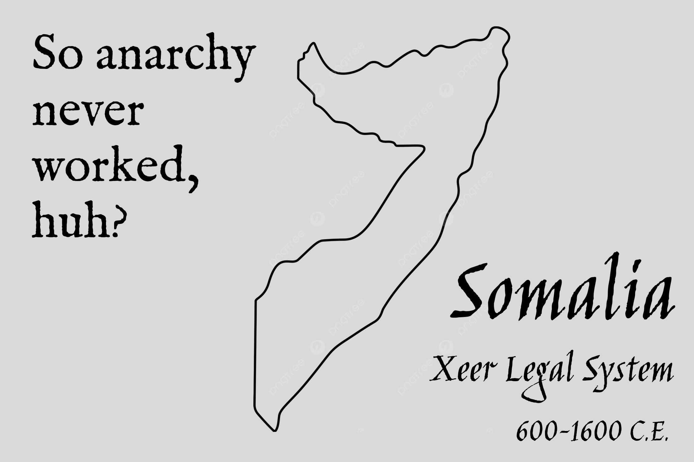
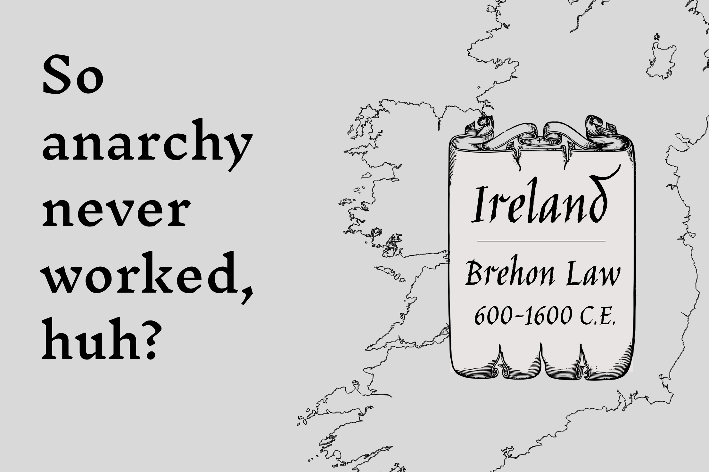

THIS PAGE IS A WORK IN PROGRESS
Anarchy Examples
Jericho
11,000 B.C.E. - 9,000 B.C.E.
The early settlement of Jericho, one of the oldest
continuously inhabited cities in the world,
provides a fascinating glimpse into pre-state
social organization. During its early Neolithic
phases, particularly the Pre-Pottery Neolithic A
and B periods, archaeological evidence suggests a
society that lacked the hallmarks of a
centralized, coercive state. While walls were
built, likely for defense against external threats
or to manage resources, there is little indication
of a hierarchical political structure, a ruling
elite, or a standing army enforcing laws.
Decisions regarding community projects, resource
allocation, and conflict resolution appear to have
been made communally or through informal,
decentralized mechanisms, demonstrating a capacity
for complex social organization without the need
for a dominating state apparatus.
Dates
11,000 B.C.E. - 9,000 B.C.E. are a good general
range for its early, pre-state phases. Some
sources might extend the initial settlement
slightly earlier, or the later phases of this
non-state period slightly later.
Çatalhöyük
7500 B.C. - 6400 B.C.
The Neolithic settlement of Çatalhöyük in Anatolia
is renowned for its unique urban layout and social
structure, which challenges conventional
understandings of early civilization. For over a
millennium, its inhabitants lived in closely
packed, interconnected dwellings with no
discernible streets or public buildings.
Crucially, archaeological excavations have
revealed a striking lack of evidence for social
stratification, such as differences in housing
size, burial goods, or monumental architecture
dedicated to a ruler or deity. There are no signs
of a central authority, a ruling class, or
specialized institutions for governance or law
enforcement. Instead, decisions and social order
appear to have been maintained through horizontal
relationships, shared cultural norms, and
localized family or clan structures, highlighting
a complex and thriving society that operated
without the presence of a coercive state.
Dates
7500 B.C. - 6400 B.C. are the main Neolithic
occupation of the eastern mound, which is the
primary focus for its anarchist-like
characteristics. UNESCO and other sources
generally cite 7400 BC to 6200 BC for this phase.
Xeer Legal system
Somalia
600 C.E. - 1600 C.E.
For centuries, much of Somali society has operated
under the Xeer legal system, a customary law
tradition that exemplifies a decentralized,
stateless form of governance. Rather than relying
on a central government or judiciary, Xeer is a
complex body of unwritten laws, agreements, and
social contracts negotiated and enforced by
elders, clan councils, and ad hoc assemblies.
Disputes are resolved through mediation,
compensation, and negotiation, with strong social
pressures and clan honor acting as primary
enforcement mechanisms. This system operates
without prisons, police forces, or a formalized
state bureaucracy, demonstrating how a society can
maintain order, resolve conflicts, and regulate
social interactions through voluntary agreements
and community-based enforcement, underscoring a
profound absence of a centralized, coercive state.

Dates
600 C.E. - 1600 C.E. is a good representation of
its long historical use. However, it's important
to note that Xeer is still actively used in many
parts of Somalia today, especially in rural areas,
and has been recognized by UNESCO as "intangible
cultural heritage." So, while your historical
range is correct for its prominent past, its
influence extends to the present. For the purpose
of historical examples, 600 C.E. - present or 600
C.E. - 21st century might be more accurate if you
want to emphasize its continuity, but for a
"period" of practice, 1600 C.E. is fine as a
historical end point. I will keep it as 1600 CE as
that was your specified end point for the period.
Brehon Law
600 C.E. - 1600 C.E.
Brehon Law, the indigenous legal system of Ireland
before the Norman invasion, provides a compelling
historical example of a highly sophisticated legal
framework operating without a centralized state.
Rather than a king or government dictating laws,
Brehon Law was administered by brehons (jurists)
who were highly respected legal experts. These
brehons did not make law but interpreted and
applied a vast body of customary laws, precedents,
and legal principles. Enforcement was largely
decentralized, relying on social pressure,
reputation, and the payment of fines or
restitution. There was no standing army or police
force to compel compliance; instead, a person's
honor and the collective pressure of their kin
group ensured adherence. This system fostered a
society where justice was delivered through a
highly developed legal scholarship and community
accountability, rather than through the coercive
power of a state.

Dates
While its origins are much older (pre-history),
the written legal texts and its formalized system
as we understand it largely developed from the 7th
and 8th centuries CE, and it was suppressed by the
English Crown in the 17th century (around 1600
CE).
Icelandic Commonwealth
930 C.E. - 1262 C.E.
The Icelandic Commonwealth stands as a remarkable
historical example of a society that functioned
for over four centuries without a centralized
executive authority or a standing army. Power was
distributed among chieftains (goðar) who held both
religious and legal influence, but their power was
derived from the voluntary allegiance of their
followers, not from a coercive state apparatus.
The Althing, a national assembly, served as a
legislative and judicial body where laws were
debated and disputes resolved, but it lacked any
executive power to enforce its rulings.
Enforcement relied primarily on private legal
action, arbitration, and the social pressure of
the community. This period in Icelandic history is
often cited as a prime example of a functioning
anarchist society, demonstrating how complex
social order could be maintained through
decentralized governance, voluntary association,
and an elaborate legal system without the presence
of a coercive state.
Dates
The settlement is conventionally dated to 874 CE,
and the Commonwealth itself is often considered to
have formally begun in 930 CE with the
establishment of the Althing. Its end is typically
marked by the "Old Covenant" (Gamli sáttmáli) in
1262-1264 CE, which saw Icelanders pledging
allegiance to the Norwegian king, and the adoption
of the Jónsbók law code in 1281 CE. So, the period
930 C.E. - 1262 C.E. is perhaps a more precise
range for the Commonwealth as a distinct political
entity, though your range covers the broader
period of its existence before full subjugation.
For the purpose of focusing on the "commonwealth"
part, I would lean towards 930 C.E. - 1262 C.E.
Neutral Moresnet
1816 C.E. - 1919 C.E.
Neutral Moresnet, a tiny condominium administered
jointly by the Netherlands (and later Belgium) and
Prussia (and later Germany), existed for over a
century with a remarkably decentralized and
largely self-governing character. Formed due to a
border dispute, neither larger power fully
asserted its control, leading to a unique
situation where the local population largely
managed its own affairs. While there were nominal
administrators from the co-ruling powers, the
community developed a strong sense of autonomy,
with little direct interference or coercive state
presence. Local committees, communal
decision-making, and a pragmatic approach to
governance meant that for decades, this small
territory operated with minimal centralized
authority, showcasing how a community can thrive
and maintain order with a significant absence of a
formal, powerful state apparatus, particularly
notable for the rise of Esperanto as a potential
official language in the early 20th century,
further highlighting its unique, non-state
character.

Dates
The territory was established in 1816 and its
unique status was formally ended by the Treaty of
Versailles in 1919, which became effective in 1920
or 1921 depending on the exact administrative
transfer. So, 1816 C.E. - 1919 C.E. (or even
1920/1921 if you want to be super precise about
the ultimate end of its status) is correct.